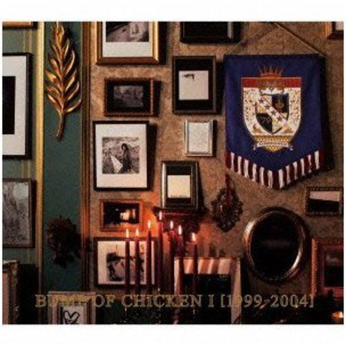

BUMP OF CHICKEN I [1999-2004]
album

バンド史上初のベストアルバム、2枚同時リリース!!
■今年3月、昨年の全国アリーナツアー終盤の東京・代々木第一体育館公演の模様を収録し、バンド初のライブ映像作品 「BUMP OF CHICKEN GOLDGLIDER TOUR 2012」DVD&Blu-rayをリリースしたBUMP OF CHICKEN。
DVD&BD両オリコンランキングで同時総合首位を達成、売上げ15万枚と現在もその数字を伸ばす好状況の中、 ついにデビュー13年目にして初のベストアルバムを発売。〈1999-2004〉と〈2005-2010〉バンドの歩んだ軌跡を辿ることのできる2タイトル!
収録曲
- ガラスのブルース
- くだらない唄
- ランプ
- K
- ダイヤモンド
- 天体観測
- ハルジオン
- Stage of the ground
- スノースマイル
- ロストマン
- sailing day
- アルエ
- オンリーロンリーグローリー
- 車輪の唄